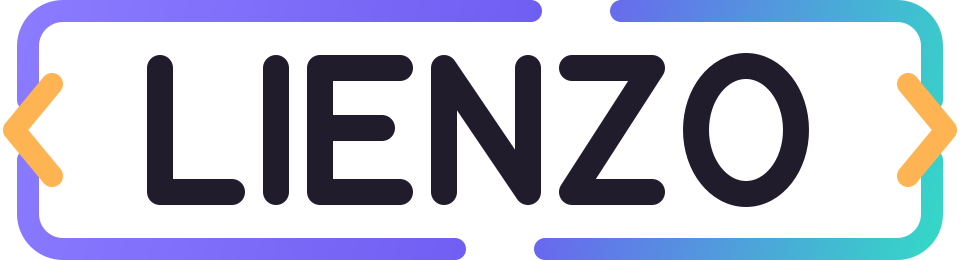

ESTUDIO DE INTERFACESLIENZO / Mockup fotorrealista
Portátil en perspectiva
Presenta tu grabación MP4 o captura en la pantalla de un portátil visto en perspectiva. Ajusta el encuadre y guarda el proyecto para abrirlo sin conexión.
MP4 + imagenHTML · CSS · JS
Mesa de presentación
Muestra

Prisma
01 / Materia y luz
Cuaderno visual
La luz también diseña.
Estudio de color, superficie y perspectiva.
Materia y luz01 / 01
Cómo llevarlo a tu proyecto
Descomprime el ZIP y abre index.html. Personaliza la demo y descarga el HTML editado. Conserva los estilos, scripts, fuentes y avisos junto a él. Los cambios y favoritos de la demo se reinician al recargar.